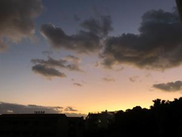
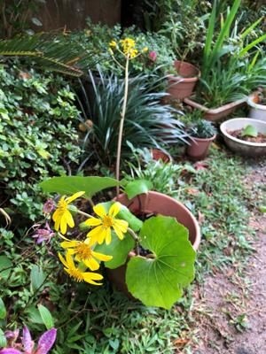
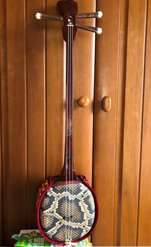

うるがいの話 ある日
最新: 花【うるがいの話 ある日】とは 一日だけのプログです
『うるがいの話』の最新一日だけのプログで、通信料が少なく経済的だ。カニの画像をクリックすると全ての日付が載る『うるがいの話』サイトを表示します
|
|
【うるがいの話】 うるがい(ｳﾙｶﾞｲ urugai)とは、『もずくがに』の名前でとても大きくなります。 |
|---|---|
|
|
【カミマヤーの話】 猫のことを方言でマヤーといいます。カミマヤー（kamimayaa）とは、神の猫のことです。 |
|
【タナガーの話】 たながー（ﾀﾅｶﾞｰtanagaa）とは手長えびのことで、何種類かあり大きいのは車 エビぐらいになります。 |

|
【ぶながぁの話】 ぶながー(bunagaa)とは、赤い髪の毛、赤い身体、そして身長は１ｍ２０ｃｍ ぐらい、川の蟹を食べているの目撃された。場所は沖縄県国頭郡大宜味村のと ある村僕の隣近所に住んでいる爺さんから、聞いた話です。 |
|
|
【ギーマの話】 ギーマ(giima)とは、山原の里山に咲くスズランに似た、 花を付けます。実は食べられます、 気が付くと口の周りが紫になっています。 |
2021年12月31日 (金）花
18:24


昨日の夜、ヨメが大変な事になった！と叫ぶ。なんでも叫ぶので別に慌てふた
めくことなく、声をするところへ行く。あへぇー、本当に大変だ。風呂場の化
粧台の近くにある天井のガラス製の照明灯が、落ちてグチャグチャに割れて散
乱している。風呂場だけでなく、風呂場につながる床にもガラスが飛び散って
いる。たまたま家に来てお風呂に入っていたコドモが、風呂から上がってくる
トランクスを付け、仕切りのカーテンを開けるとそこはガラスだらけ。お、下
駄じゃいと太宰府天満宮で買った下駄をコドモに投げて渡す、ガリバリとガラ
スを下駄で踏みつけ無事風呂場から抜ける。その後、私は下駄を履き、飛び散
ったガラスの破片を片付けた。それにしても、何故、落ちた？、締め付けた私
がいけなかったのか、でも締め付けたのは、はるか数年前の蛍光灯が切れた時
である。いまさら、、そうか賞味期限だ。このガラスの照明器具は新築のとき
からで既に、２７年９月２９日（エクセルで計算した）も経ったいる。家にあ
る証明器具は、これ以外は増改築等のタイミングで全てビニール製に変えてい
る。なぜ、これは変えなかったのだろう、疑問は残ったが。大事に至らなくて
良かった、ヨメは落ちるところを目の前で見ているし、コドモや私の頭上に落
ちていたらと思いながら、年末の掃除は終わったつもりだったが、ガラスだけ
に丁寧に掃除した。それにしても下駄があってよかった。
 
ところで、この前ビリー・ジョエルを特集したラジオを聴きながらパソコンに
向かっていたら、『イエスタデイ』と『喜納昌吉の花』、この二つの世界的に
有名な曲は突然降りて来たということの話題が突如として話していた。確かに
話は聞いたことがある、それにしても『喜納昌吉の花』が『イエスタデイ』と
比較されるとは思っていたら、この前苦労して楽譜ソフトに登録しユーチュー
ブにあげたのを思い出した。三線で弾くには、今の私ではハードルが高いがい
つかはと、子供がしばらく演奏しないからと持ってきた三線２号で、挑戦する
ことにする（来年から）。この歳になってギターを弾くとは思いもよらなかっ
た、楽譜も読めなかったのに、今では移調作業はもとより、ヘ音記号があるピ
アノの曲や、ギターの六弦から三線の三弦へ変換も扱えるようになった。左指
にはギタータコができ、楽しい一年になった。
『全ての人に花を（三線演奏）（ユーチューブ）』 ３分５９秒 三線演奏
１８時１１分 ビットコインの総資産 ￥１６、１０３
投資ってそうそう上手くいく筈はないと思う